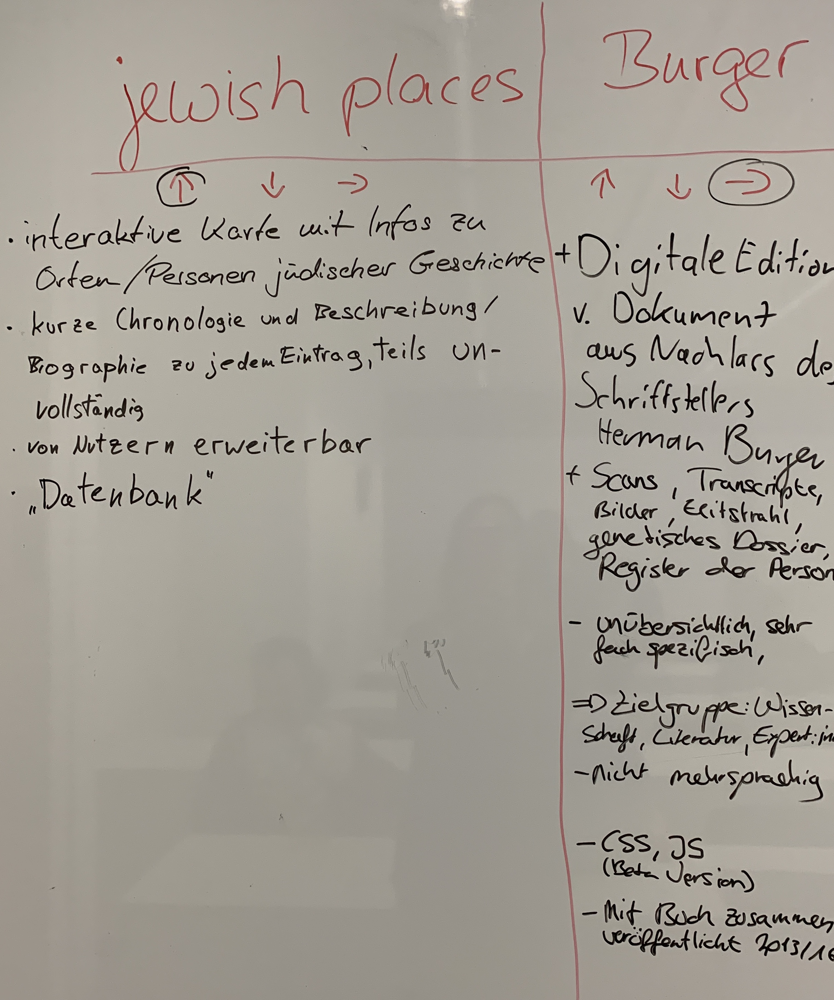

Digitale Sammlungen
Definition
Digitale Sammlungen sind organisierte, digitale Repräsentationen von physischen oder immateriellen Objekten, die durch digitale Technologien erstellt und verwaltet werden. Diese Sammlungen beinhalten oft Metadaten, die Kontextinformationen und Suchfunktionen bereitstellen, um den Zugriff auf die digitalisierten Materialien zu erleichtern.
Wichtige Merkmale
- Digitalisierung: Der Prozess der Umwandlung von physischen Objekten, wie Manuskripten, Bildern oder Artefakten, in digitale Formate durch Scannen, Fotografieren oder andere digitale Erfassungsmethoden.
- Metadaten: Informationen, die den Inhalt und Kontext der digitalen Objekte beschreiben und für die Organisation, Auffindbarkeit und langfristige Verwaltung entscheidend sind.
- Zugänglichkeit: Digitale Sammlungen ermöglichen den Zugang zu Informationen und Ressourcen über das Internet oder lokale Netzwerke durch spezielle Datenbanken, Online-Portale oder digitale Archive.
- Bewahrung: Digitale Sammlungen dienen dem Zweck, wertvolle Inhalte für die Zukunft zu bewahren, indem die langfristige Erhaltung der digitalen Dateien und ihrer Metadaten sichergestellt wird.
- Interaktive Funktionen: Funktionen wie Volltextsuche, Zoom-Funktionen für Bilder oder interaktive Zeitachsen ermöglichen eine tiefere Auseinandersetzung mit den Materialien.
Anwendungsbeispiele
- Bibliotheken: Digitale Bibliotheken bieten Zugang zu digitalisierten Büchern, Zeitschriften und anderen Dokumenten.
- Museen: Museen erstellen digitale Sammlungen von Artefakten und Kunstwerken, die online durchstöbert werden können.
- Archive: Historische Dokumente, Fotografien und Aufzeichnungen werden digitalisiert, um sie leichter zugänglich und durchsuchbar zu machen.
- Wissenschaftliche Daten: Forschungsdaten und Ergebnisse werden digital erfasst und in Repositorien gespeichert.
Vorteile
- Erweiterter Zugang: Nutzer können auf Sammlungen aus der ganzen Welt zugreifen, ohne physisch vor Ort sein zu müssen.
- Erhaltung: Digitalisierte Materialien können vor physischem Verfall geschützt werden.
- Suchbarkeit: Durch Metadaten und Suchfunktionen können Informationen effizient gefunden werden.
Herausforderungen
- Technologische Abhängigkeit: Die dauerhafte Zugänglichkeit hängt von der Technologie ab, die möglicherweise veraltet oder nicht mehr unterstützt wird.
- Datensicherheit: Schutz der digitalen Dateien vor Verlust oder Diebstahl.
- Kosten: Digitalisierung und langfristige Archivierung können kostenintensiv sein.


×